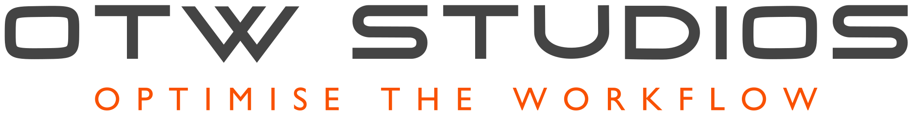
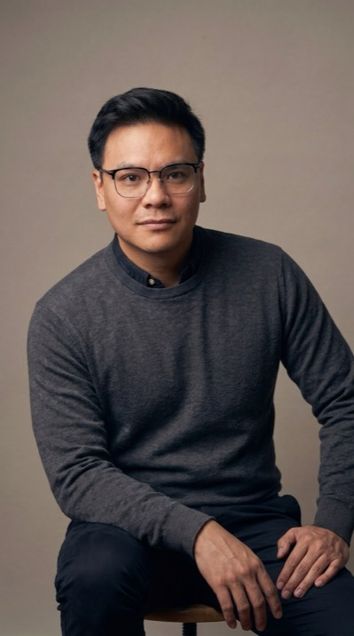
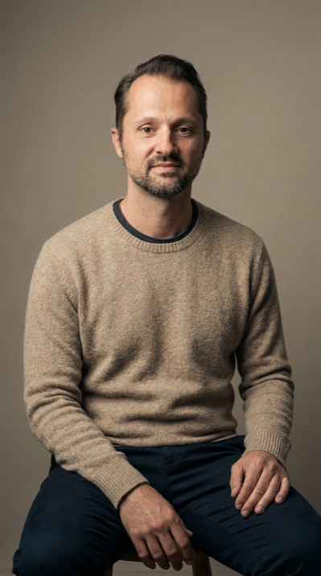

Full brand. 10 years live.

Panda & Co
My own cafe in Perth. Proudly inauthentic Asian-fusion. Built brand, site, menus, signage from scratch. Ten years on, still running.

Looped background video: dusk-to-dawn cityscape over a wildflower field, with two people working at laptops. OTW Studios is a Perth-based studio building bespoke brand, websites, and AI systems for Australian small businesses.
Bespoke brand, websites, and AI for Australian businesses. Built for you, run by us. No retainer required.
My own cafe in Perth. Proudly inauthentic Asian-fusion. Built brand, site, menus, signage from scratch. Ten years on, still running.

Natural-stone supplier with 50 years in the WA trade. Perth Stadium, Optus Stadium, Kings Park. Site refresh and brand reposition for premium build clientele.

WA landscape supplies, since 2018. Exclusive Rural Stone distributor. Site rebuild with public ordering, an estimate calculator, product-led UI, plus SEO repositioning.

Aveda concept salon and curl specialist in Mount Pleasant. Established 2004 by Jenni Spence. Site refresh, SEO build, ongoing organic discovery.

Perth IT support specialist, 15+ years on the road. Site refresh and SEO build for Dale's mobile tech-support business. OTW runs the SEO ongoing.

Hospitality-specific app for multi-venue operators. AI-predicted rosters plus a live on-shift dashboard so duty managers can balance labour against revenue in real time. In beta.

Andy's own AI personal stylist. Translates a colour and style report into real-time judgement on any garment. Refined dark, quiet luxury. In private alpha.

New digital presence and integrated company email, plus a brand expansion for an established Perth carpentry studio.
Most businesses aren't short on potential. They're short on time. The calls that don't get answered, the emails that pile up, the brand that doesn't reflect the work. None of these are unsolvable problems. They just need the right people to come in and build the fix.
That's OTW Studios. We work with Australian businesses to find the things slowing them down and build systems that handle them. Branding, digital assets, systems, workflows. Whatever the brief calls for. Then we stay and run it.
How we work. Three stages, one team that stays through all of them. The disciplines (Brand, Digital, AI Systems) live inside this loop, not above it.
A conversation about your business. Where the drag is, what's been tried, what actually needs to change. No deck, no procurement gauntlet.
Brand, websites, and AI systems built bespoke for the business. Not templates, not platforms. The thing that fixes the actual problem.
We don't hand over and disappear. OTW runs, refines, and stays accountable. If something stops working, that's on us to fix.
“AI is the tool. We’re the people who figure out where it fits.”
We don't hand over software and wish you luck. We don't write a strategy deck and invoice you for the insight. We build things, then we run them, refine them, and stay accountable for them working.
Every engagement starts with a conversation about your business: where the drag is, what's been tried, what actually needs to change. From there we build a scope and get to work. No retainers for retainer's sake. No unnecessary complexity. Just the thing that needs to be built, built well.
Every solution is built for the specific business. We don't repurpose templates or apply the same fix to every client.
We build it, we run it, we own the outcome. If something isn't working, that's on us to fix.
The technology is always in service of the person using it. We build for the people doing the work, not the people signing off on it.
OTW Studios is built on the idea that businesses deserve partners, not vendors. We're a small team of specialists who care about the work, and who are reachable when something needs attention.

Twenty years across hospitality, operations, and small business. Andy built OTW Studios after spending too long watching good businesses lose time to problems that had fixable solutions. He runs the strategy, client relationships, and build.
andywungo.com →
Fifteen years running mobile tech support for Perth homes and businesses. Dale joins OTW when a build needs the infrastructure side handled. Computer setup, network, security, and the person clients can call when something stops working. Plain English, no rush.
daleingvarsonit.com →No pitch, no obligation. A short call to understand your business and whether OTW Studios is the right fit. If we're not, we'll point you to someone who is.